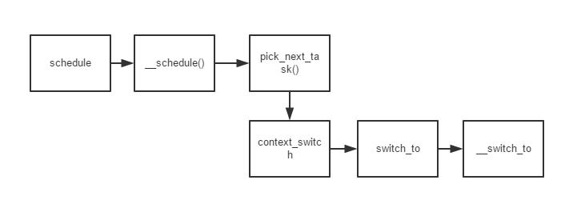
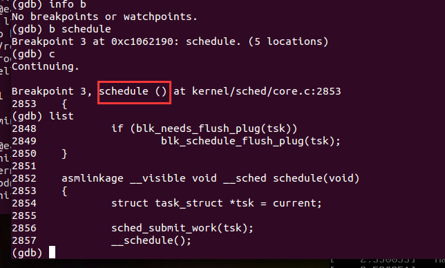
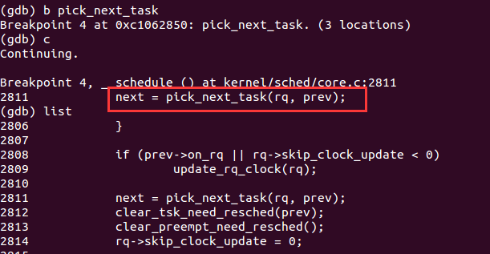
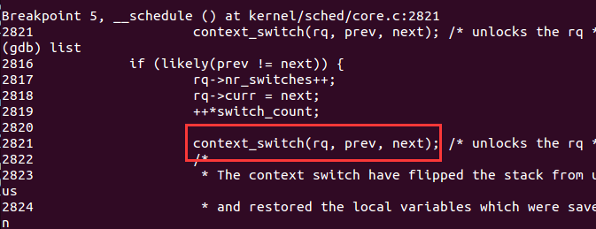
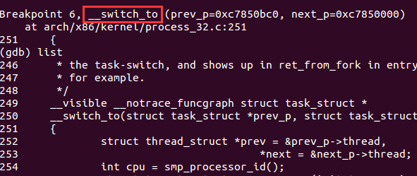

调度时机只是判断是否调度但是不一定真的调度
老师的站在另外一个角度：
schedule（）：主要函数进程调度函数完成进程的选择和上下文切换 do_timer（）：时钟函数 参考书上一段资料：
在CFS(unix引入的公平调度器)中，tick中断（dotimer()）首先更新调度信息。然后调整当前进程在红黑树中的位置。调整完成后如果发现当前进程不再是最左边的叶子(左边代表优先级最高)，就标记needresched标志
retfromsys_call（）：当一个系统调用或中断完成时，该函数被调用，用于处理一些收尾工作。
dotimer() 修改进程信息、置标志位 --------> retfromsyscall 判断标志位 --------> call SYMBOL_NAME(schedule) 调用 schedule（）完成切换
切换主要流程： 
先进入schedule() 
通过 picknexttask 找到下一个切换的进程

进入context_switch进行进程上下文切换

这里跟踪到了 _switchto但是没有找到switch_to
switchto 主要是esp和eip切换 _switchto 网上找的的说法是 切换浮点部件寄存器和状态 fpu 重设TSS的esp0 设置currenttask 这个还是很重要的。 
另外一个小细节
由于调用_switchto时不是通过call指令，而是jmp
然后 _switchto也会return 这是就会执行标号1的内容了
在内核态，进程切换主要分两步：
1：切换页全局目录
2：切换堆栈和硬件上下文 switch_to 实现
switch_to:
_switchto:
切换内核堆栈之后，TSS段也要相应的改变
这是因为对于linux系统来说同一个CPU上所有的进程共用一个TSS，进程切换了，因此TSS需要随之改变。
linux系统中主要从两个方面用到了TSS：
(1)任何进程从用户态陷入内核态都必须从TSS获得内核堆栈指针
(2)用户态读写IO需要访问TSS的权限位图。
马上要考试了。各位加油
参考文献：
linux kernel development 一书 Robert.Lover